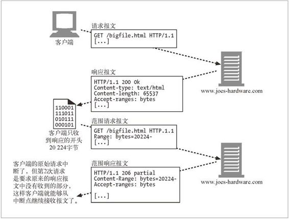

15.9 范围请求
关于客户端如何要求服务器只在资源的客户端副本不再有效的情况下才发送其副本，我们已经清楚地理解了。HTTP 还进一步锦上添花：它允许客户端实际上只请求文档的一部分，或者说某个范围。
假设你正通过慢速的调制解调器连接下载最新的热门软件，已经下了四分之三，忽然因为一个网络故障，连接中断了。你已经为等待下载完成耽误了很久，而现在被迫要全部重头再来，祈祷着别再发生这样的倒霉事了。
有了范围请求，HTTP 客户端可以通过请求曾获取失败的实体的一个范围（或者说一部分），来恢复下载该实体。当然这有一个前提，那就是从客户端上一次请求该实体到这次发出范围请求的时段内，该对象没有改变过。例如：
GET /bigfile.html HTTP/1.1
Host: www.joes-hardware.com
Range: bytes=4000-
User-Agent: Mozilla/4.61 [en] (WinNT; I)
...
在本例中，客户端请求的是文档开头 4000 字节之后的部分（不必给出结尾字节数，因为请求方可能不知道文档的大小）。在客户端收到了开头的 4000 字节之后就失败的情况下，可以使用这种形式的范围请求。还可以用 Range 首部来请求多个范围（这些范围可以按任意顺序给出，也可以相互重叠）。例如，假设客户端同时连接到多个服务器，为了加速下载文档而从不同的服务器下载同一个文档的不同部分。对于客户端在一个请求内请求多个不同范围的情况，返回的响应也是单个实体，它有一个多部分主体及 Content-Type: multipart/byteranges 首部。
并不是所有服务器都接受范围请求，但很多服务器可以。服务器可以通过在响应中包含 Accept-Ranges 首部的形式向客户端说明可以接受的范围请求。这个首部的值是计算范围的单位，通常是以字节计算的。1 例如：
1 HTTP/1.1 规范中只定义了 bytes 记号，但服务器和客户端的具体实现可以用它们自己认定的单位来衡量或切分实体。
HTTP/1.1 200 OK
Date: Fri, 05 Nov 1999 22:35:15 GMT
Server: Apache/1.2.4
Accept-Ranges: bytes
...
图 15-9 展示了涉及范围请求的一系列 HTTP 事务的例子。

图 15-9 实体范围请求示例
Range 首部在流行的点对点（Peer-to-Peer，P2P）文件共享客户端软件中得到广泛应用，它们从不同的对等实体同时下载多媒体文件的不同部分。
注意，范围请求也属于一类实例操控，因为它们是在客户端和服务器之间针对特定的对象实例来交换信息的。也就是说，客户端的范围请求仅当客户端和服务器拥有文档的同一个版本时才有意义。